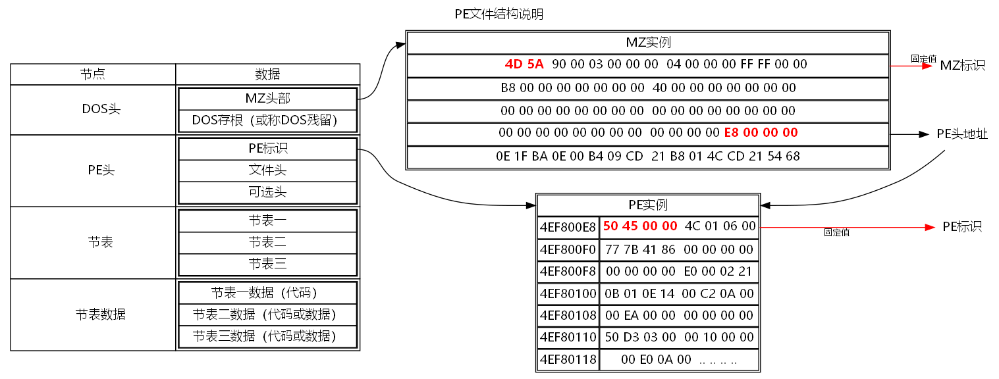
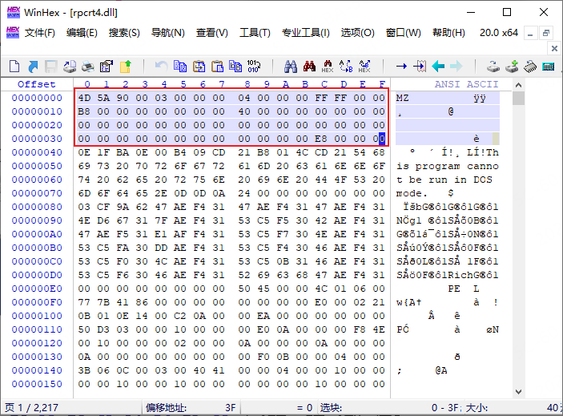
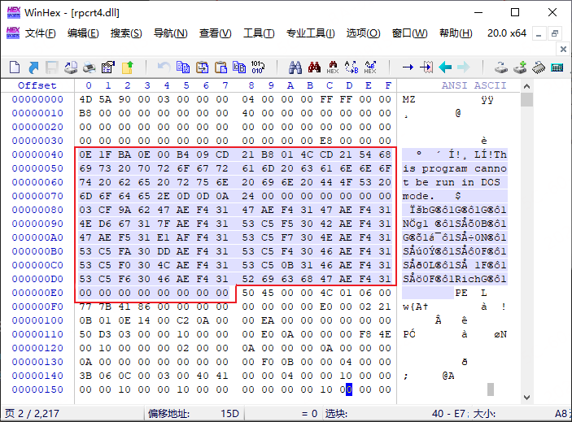
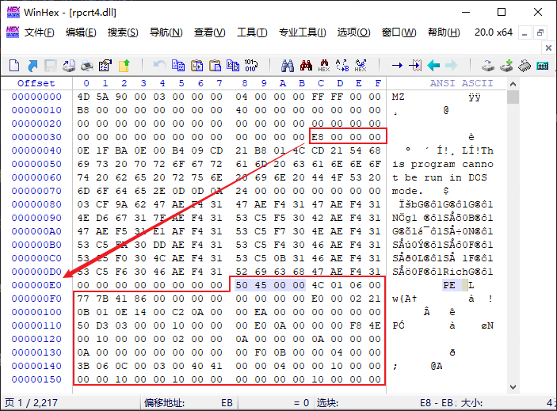
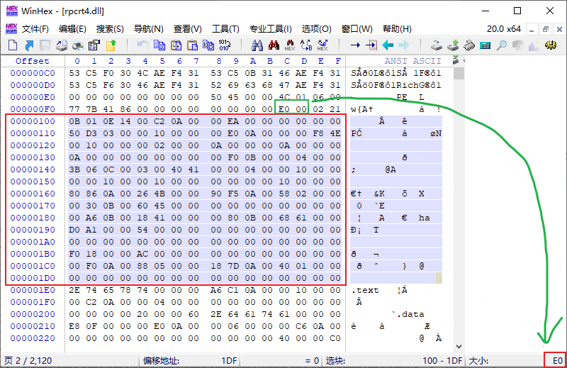
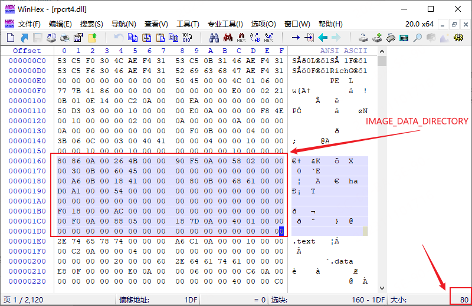

概述PE文件结构基础认识之DOS头和PE头（以
rpcrt4.dll为例分析）
参考文章：
0x01 前言
PE(Portable Executable)，即可移植的执行体。
-
Linux平台：ELF（Executable and Linking Format）文件结构。
-
Windows平台下，所有的可执行文件。诸如：exe、dll、sys、ocx、com等均适用PE文件结构，这些使用PE文件结构也被称为PE文件。
0x02 PE结构
PE 结构是由若干个复杂的结构体组合而成的，不是单单的一个结构体那么简单，它的结构就像文件系统的结构是由多个结构体组成的。PE结构 包含的结构体有 DOS 头、PE 标识、文件头、可选头、目录结构、节表等。如下图所示：

DOS头
DOS头中声明用的寄存器(我们可以看到e_ss、e_sp、e_ip、e_cs还是16位的寄存器)，所以在32位/64为系统中用到的只有两个成员了（第一个和最后一个）。无论是32位还是64位PE文件，其文件的头部必定是DOS头。大小为 40H(64字节)。相关结构如下所示：
// WORD 为2字节
// DWORD 为4字节
typedef struct _IMAGE_DOS_HEADER { // DOS .EXE header(※Magic DOS signature MZ(4Dh 5Ah):MZ标记)
WORD e_magic; // Magic number
WORD e_cblp; // Bytes on last page of file
WORD e_cp; // Pages in file
WORD e_crlc; // Relocations
WORD e_cparhdr; // Size of header in paragraphs
WORD e_minalloc; // Minimum extra paragraphs needed
WORD e_maxalloc; // Maximum extra paragraphs needed
WORD e_ss; // Initial (relative) SS value
WORD e_sp; // Initial SP value
WORD e_csum; // Checksum
WORD e_ip; // Initial IP value
WORD e_cs; // Initial (relative) CS value
WORD e_lfarlc; // File address of relocation table
WORD e_ovno; // Overlay number
WORD e_res[4]; // Reserved words
WORD e_oemid; // OEM identifier (for e_oeminfo)
WORD e_oeminfo; // OEM information; e_oemid specific
WORD e_res2[10]; // Reserved words
LONG e_lfanew; // File address of new exe header
} IMAGE_DOS_HEADER, *PIMAGE_DOS_HEADER;DOS 头又分为两部分，MZ头部 和 DOS存根。
MZ头部
-
MZ文件头：IMAGE_DOS_HEADER 结构体，其大小占64个字节，并且该结构中的最后一个LONG类型
e_lfanew成员指向PE文件头的位置为中的PE文件头标志的地址。 DOS头中有两个重要的成员，分别是e_magic和e_lfanew，如PE文件结构说明一图所示：e_magic：对应 MZ标识(固定值) ，也就是0x5A4De_lfanew: 指pe的偏移量，对应的PE数据块的基地址

DOS存根（DOS stub）
DOS头(IMAGE_DOS_HEADER)和PE头(IMAGE_NT_HEADERS)中间的空余位置是一些垃圾值以及编译器填充的一些 *The is program cannot be run in DOS mode.*或 This program must be run under Win32 等信息。这些信息就是 DOS存根。DOS存根实际上是一段汇编代码。用于在DOS环境下启动PE文件时输出一些上述文本。

在pe文件利用的时候，我们可以把payload写入到当前区域，诸如存放我们的shellcode，在读取时，获取dos头字节数，减去MZ头字节数，即为dos存根字节大小。然后拿去操作加载shellcode等。
PE头
在MS-DOS头下main，就是PE头，PE头是PE相关结构NT映像头（IMAGE_NT_HEADER）的简称，其中包含许多PE装载器用到的重要字段。PE头又分为标准PE头和可选PE头，其同为NT结构的成员：
IMAGE_NT_HEADER数据结构定义：
//NT头
//pNTHeader = dosHeader + dosHeader->e_lfanew;
struct _IMAGE_NT_HEADERS{
0x00 DWORD Signature; //PE文件标识:ASCII的"PE\0\0"
0x04 _IMAGE_FILE_HEADER FileHeader;
0x18 _IMAGE_OPTIONAL_HEADER OptionalHeader;
};根据DOS头的e_lfanew成员我们就可以找到NT头，NT头的第一个成员Signature是PE\0\0（0X50 0X45 0X00 0X00四字节的签名），后两个成员则分别是标准PE头FileHeader（_IMAGE_FILE_HEADER）和OptionalHeader可选PE头（_IMAGE_OPTIONAL_HEADER）。

PE标识 Signature
将文件标识为 PE 映像的 4 字节签名。字节为PE\0\0。这个字段是PE文件的标志字段，通常设置成 00004550h，其ASCII码为 PE00，这个字段是PE文件头的开始，前面的DOS_HEADER结构中的字段e_lfanew字段就是指向这里。
文件头 FileHeader
文件头结构体为 _IMAGE_FILE_HEADER，见IMAGE_FILE_HEADER (winnt.h) - Win32 apps | Microsoft Learn。结构体成员变量如下所示：
typedef struct _IMAGE_FILE_HEADER {
WORD Machine; //运行平台
WORD NumberOfSections; //文件的区块数目
DWORD TimeDateStamp; //文件创建的用时间戳标识的日期
DWORD PointerToSymbolTable; //指向符号表（用于调试）
DWORD NumberOfSymbols; //符号表中符号的个数
WORD SizeOfOptionalHeader; //IMAGE_OPTIONAL_HEADER32结构大小
WORD Characteristics; //文件属性
} IMAGE_FILE_HEADER, *PIMAGE_FILE_HEADER;参照上述结构体，分析一下 RPCrt4.dll 的 FileHeader 成员。
PE头存储内容如下所示：
Offset 0 1 2 3 4 5 6 7 8 9 A B C D E F
000000E0 50 45 00 00 4C 01 06 00 PE L
000000F0 77 7B 41 86 00 00 00 00 00 00 00 00 E0 00 02 21 w{A? ? !现在有数据也知道结构体，可以根据存储的内容知道 rpcrt4.dll 的一些信息了（地址是由低位向高位增长的，这里直接复制粘贴了，读者知道这回事就行）
| 成员变量 | Machine | NumberOfSections | TimeDateStamp | PointerToSymbolTable | NumberOfSymbols | SizeOfOptionalHeader | Characteristics |
|---|---|---|---|---|---|---|---|
| 大小 | WORD | WORD | DWORD | DWORD | DWORD | WORD | WORD |
| 值 | 4C 01 | 06 00 | 77 7B 41 86 | 00 00 00 00 | 00 00 00 00 | E0 00 | 02 21 |
| 说明 | 0x014C 表示当前体系结构类型为 x86 | 当前PE文件的节数，当前所示有 6 个 | 当前PE文件的时间戳 | 符号表的偏移量（以字节为单位），如果没有 COFF 符号表，则为 0 | 符号表中的符号数，当前为 0 | 可选文件头大小，当前所示有 224 个 | 图像的特征 0x2102 |
| 补充 | 机器标识 | 标识区块的数目，关于区块后面会详细讲 | 指的就是PE文件创建的事件，这个时间是指从1970年1月1日到创建该文件的所有的秒数 | 紧跟着IMAGE_FILE_HEADER后面的数据大小，这也是一个数据结构，它叫做IMAGE_OPTIONAL_HEADER,其大小依赖于是64位还是32位文件。32位文件值通常是00EOh，对于64位值通常为00F0h | 普通EXE文件这个字段值为010fh，DLL文件这个字段一般是0210h |
最后一个参数图像特征
Characteristics的值 0x2102 的说明
- 0x2000 该图像是一个DLL文件，虽然是可执行文件，但不能直接运行
- 0x0100 计算机支持32位
- 0x0002 该文件是可执行文件，（没有未解析的外部引用）
可选头 OptionalHeader
可选PE头紧接着标准PE头，其大小在标准PE头中给出：大小为 E0H 即224字节。_IMAGE_OPTIONAL_HEADER结构如下所示：
WinNT.h 中的实际 结构IMAGE_OPTIONAL_HEADER32命名 ， IMAGE_OPTIONAL_HEADER 定义为 IMAGE_OPTIONAL_HEADER32。 但是，如果定义了 _WIN64 ，则 IMAGE_OPTIONAL_HEADER 定义为 IMAGE_OPTIONAL_HEADER64。
typedef struct _IMAGE_OPTIONAL_HEADER
{
//
// Standard fields.
//
/*+0x00*/ WORD Magic; // 标志字, ROM 映像（0107h）,普通可执行文件（010Bh）
/*+0x02*/ BYTE MajorLinkerVersion; // 链接程序的主版本号
/*+0x03*/ BYTE MinorLinkerVersion; // 链接程序的次版本号
/*+0x04*/ DWORD SizeOfCode; // 所有含代码的节的总大小
/*+0x08*/ DWORD SizeOfInitializedData; // 所有含已初始化数据的节的总大小
/*+0x0c*/ DWORD SizeOfUninitializedData; // 所有含未初始化数据的节的大小
/*+0x10*/ DWORD AddressOfEntryPoint; // 程序执行入口RVA
/*+0x14*/ DWORD BaseOfCode; // 代码的区块的起始RVA
/*+0x18*/ DWORD BaseOfData; // 数据的区块的起始RVA
//
// NT additional fields. 以下是属于NT结构增加的领域。
//
/*+0x1c*/ DWORD ImageBase; // *程序的首选装载地址
/*+0x20*/ DWORD SectionAlignment; // *内存中的区块的对齐大小
/*+0x24*/ DWORD FileAlignment; // *文件中的区块的对齐大小
/*+0x28*/ WORD MajorOperatingSystemVersion; // 要求操作系统最低版本号的主版本号
/*+0x2a*/ WORD MinorOperatingSystemVersion; // 要求操作系统最低版本号的副版本号
/*+0x2c*/ WORD MajorImageVersion; // 可运行于操作系统的主版本号
/*+0x2e*/ WORD MinorImageVersion; // 可运行于操作系统的次版本号
/*+0x30*/ WORD MajorSubsystemVersion; // 要求最低子系统版本的主版本号
/*+0x32*/ WORD MinorSubsystemVersion; // 要求最低子系统版本的次版本号
/*+0x34*/ DWORD Win32VersionValue; // 莫须有字段，不被病毒利用的话一般为0
/*+0x38*/ DWORD SizeOfImage; // 映像装入内存后的总尺寸
/*+0x3c*/ DWORD SizeOfHeaders; // 所有头+区块表的尺寸大小
/*+0x40*/ DWORD CheckSum; // 映像的校检和
/*+0x44*/ WORD Subsystem; // 可执行文件期望的子系统
/*+0x46*/ WORD DllCharacteristics; // DllMain()函数何时被调用，默认为0
/*+0x48*/ DWORD SizeOfStackReserve; // 初始化时的栈大小
/*+0x4c*/ DWORD SizeOfStackCommit; // 初始化时实际提交的栈大小
/*+0x50*/ DWORD SizeOfHeapReserve; // 初始化时保留的堆大小
/*+0x54*/ DWORD SizeOfHeapCommit; // 初始化时实际提交的堆大小
/*+0x58*/ DWORD LoaderFlags; // 与调试有关，默认为0
/*+0x5c*/ DWORD NumberOfRvaAndSizes; // 下边数据目录的项数，这个字段自Windows NT发布以来，一直是16
/*+0x60*/ IMAGE_DATA_DIRECTORY DataDirectory[IMAGE_NUMBEROF_DIRECTORY_ENTRIES]; // *数据目录表
} IMAGE_OPTIONAL_HEADER32, *PIMAGE_OPTIONAL_HEADER32;
上述共计 31 个字段，常用的一般是加*的几个。这里还是简单的按照内存和结构体一一对应分析看下。
内存如下所示：

| 成员变量 | 大小 | 值 | 说明 | 补充 |
|---|---|---|---|---|
| Magic | WORD | 0B 01 | 映像文件的状态，0x01 标识当前是可执行映像 | |
| MajorLinkerVersion | BYTE | 0E | 链接器的主要版本号，当前是 14 | |
| MinorLinkerVersion | BYTE | 14 | 链接器的次要版本号，当前是 20 | |
| SizeOfCode | DWORD | 00 C2 0A 00 | 如果有多个代码节，则为代码节的大小（以字节为单位）或所有此类节的总和。 | |
| SizeOfInitializedData | DWORD | 00 EA 00 00 | 初始化的数据节的大小。代码节的大小或所有此类节的总和 | |
| SizeOfUninitializedData | DWORD | 00 00 00 00 | 未初始化数据节的大小 | |
| AddressOfEntryPoint | DWORD | 50 D3 03 00 | 指向入口点函数的指针 | |
| BaseOfCode | DWORD | 00 10 00 00 | 指向代码部分的开头的指针 | |
| BaseOfData | DWORD | 00 E0 0A 00 | 指向数据部分开头（相对于图像基数）的指针。 | |
| ImageBase | DWORD | 00 00 F8 4E | 图像加载到内存中的第一个字节的首选地址。 此值是 64K 字节的倍数。 DLL 的默认值为 0x10000000。 应用程序的默认值为 0x00400000，0x00010000 Windows CE除外。 | |
| SectionAlignment | DWORD | 00 10 00 00 | 内存中加载的节的对齐方式（以字节为单位）。 此值必须大于或等于 FileAlignment 成员。 默认值是系统的页大小。 | |
| FileAlignment | DWORD | 00 02 00 00 | 图像文件中各部分的原始数据的对齐方式（以字节为单位）。 该值应为介于 512 和 64K 之间的幂 (（含) ）。 默认值为 512。 如果 SectionAlignment 成员小于系统页面大小，则此成员必须与 SectionAlignment 相同。 | |
| MajorOperatingSystemVersion | WORD | 0A 00 | 所需操作系统的主版本号。 0x0A 为 10 | |
| MinorOperatingSystemVersion | WORD | 00 00 | 所需操作系统的次要版本号。 | |
| MajorImageVersion | WORD | 0A 00 | 映像的主版本号。 | |
| MinorImageVersion | WORD | 00 00 | 映像的次要版本号。 | |
| MajorSubsystemVersion | WORD | 0A 00 | 子系统的主版本号。 | |
| MinorSubsystemVersion | WORD | 00 00 | 子系统的次要版本号。 | |
| Win32VersionValue | DWORD | 00 00 00 00 | 此成员是保留的，必须为 0。 | |
| SizeOfImage | DWORD | 00 F0 0B 00 | 图像的大小（以字节为单位），包括所有标头。 必须是 SectionAlignment 的倍数。 | |
| SizeOfHeaders | DWORD | 00 04 00 00 | 以下项的组合大小，舍入为 FileAlignment 成员中指定的值的倍数。 | |
| CheckSum | DWORD | 3B 06 0C 00 | 映像文件校验和。 以下文件在加载时进行验证：所有驱动程序、在启动时加载的任何 DLL，以及加载到关键系统进程中的任何 DLL。 | |
| Subsystem | WORD | 03 00 | 运行此映像所需的子系统。 定义了以下值。 0x03 标识 windows 字符膜片式用户界面（CUI）系统 | |
| DllCharacteristics | WORD | 40 41 | 图像的 DLL 特征。 定义了以下值。 | |
| SizeOfStackReserve | DWORD | 00 00 04 00 | ||
| SizeOfStackCommit | DWORD | 00 10 00 00 | ||
| SizeOfHeapReserve | DWORD | 00 00 10 00 | ||
| SizeOfHeapCommit | DWORD | 00 10 00 00 | ||
| LoaderFlags | DWORD | 00 00 00 00 | ||
| NumberOfRvaAndSizes | DWORD | 10 00 00 00 | ||
| DataDirectory[IMAGE_NUMBEROF_DIRECTORY_ENTRIES] | IMAGE_DATA_DIRECTORY | 16个指针地址，大小为 80H | 这个是一个指针类型，指向 IMAGE_DATA_DIRECTORY 结构的指针。会根据传入的索引号返回不同指向的结构体 |
最后一个成员变量结构体如下所示，详见IMAGE_DATA_DIRECTORY (winnt.h) - Win32 apps | Microsoft Learn：
struct _IMAGE_DATA_DIRECTORY{
DWORD VirtualAddress;
DWORD Size;
};
//占用16*8 = 128Byte = 80H = E0H(可选PE头默认大小) - 60H(前面所有成员固定占用大小)关于最后一个成员变量，可枚举的 IMAGE_NUMBEROF_DIRECTORY_ENTRIES 索引总共有15个，外加一个保留指针。也就是说，在 DataDirectory 位置存放了 16 个指针。可以参考之前的PE头对照一下，剩下的PE内存刚好存放了 16 个指针，参考 PE 块的总大小，剩下的部分大小也刚好为 。
如下图所示：

节表
下篇文章记录
节表数据
下篇文章记录
0x03
补充一段代码，演示简单获取 Section 各个段的信息
ULONGLONG FindSignatureCode::operator()(CString module, std::vector<ULONG> signatureCodes)
{
DBGTRACE;
if (signatureCodes.size() == 0)
{
return 0;
}
ULONGLONG addr = 0;
DWORD cbSize;
HMODULE* pHmodule = NULL;
ModuleSectionInfo_T ModuleSectionInfo;
HANDLE hModuleSnap = ::CreateToolhelp32Snapshot(TH32CS_SNAPMODULE, GetCurrentProcessId()); // 模块快照句柄
MODULEENTRY32 me32 = { 0 }; // 模块入口
me32.dwSize = sizeof(MODULEENTRY32); // 申请空间
// 打印模块名
while (::Module32Next(hModuleSnap, &me32)) {
if (module.CompareNoCase(me32.szModule) == 0)
{
Debug_Run(L"Find Module(%s)", me32.szModule);
break;
}
}
ULONGLONG ulModuleBase = (ULONGLONG)me32.modBaseAddr;
ULONGLONG ulModuleSize = (ULONGLONG)me32.modBaseSize;
HANDLE hProcess = OpenProcess(PROCESS_CREATE_THREAD | PROCESS_VM_OPERATION | PROCESS_VM_WRITE | PROCESS_VM_READ, FALSE, GetCurrentProcessId());
CHAR* szBuffer = new CHAR[ulModuleSize];
ZeroMemory(szBuffer, ulModuleSize);
SIZE_T sReadSize = 0;
if (ReadProcessMemory(hProcess, (LPCVOID)ulModuleBase, szBuffer, ulModuleSize, &sReadSize))
{
for (size_t offset = 0; offset < ulModuleSize - signatureCodes.size() * 4; offset++)
{
int i = 0;
for (; i < signatureCodes.size(); i++)
{
ULONGLONG ReadMem = (*(ULONG*)(szBuffer + offset + (i * 4)));
ULONGLONG SigCode = signatureCodes[i];
if (SigCode != ReadMem)
{
break;
}
}
if (i == signatureCodes.size())
{
addr = (ulModuleBase + offset);
Debug_Run(L"Found Signature Code:%lld", addr);
break;
}
}
}
else
{
Debug_Error(L"ReadProcessMemory Failed %d", GetLastError());
}
#if 0
if (!EnumProcessModulesEx(hpro, NULL, 0, &cbSize, LIST_MODULES_ALL)) goto End;
pHmodule = (HMODULE*)malloc(cbSize);
if (pHmodule == NULL) goto End;
if (!EnumProcessModulesEx(hpro, pHmodule, cbSize, &cbSize, LIST_MODULES_ALL)) goto End;
for (ULONG i = 0; i < cbSize / sizeof(*pHmodule); i++)
{
GetModulePdataSection(hpro, me32.hModule, );
}
#endif // 0
if(!GetModulePdataSection(hProcess, me32.hModule, &ModuleSectionInfo)) goto End;
VOID PTR_T PTR_T pCandidate;
PIMAGE_IA64_RUNTIME_FUNCTION_ENTRY pRuntimeEntry;
PUNWIND_INFO pUnWindInfo;
#pragma warning(push)
#pragma warning(disable:4305)
pCandidate = (VOID PTR_T PTR_T)ModuleSectionInfo.pBase;
#pragma warning(pop)
{
if (!ReadProcessMemory(hProcess, pCandidate, &pRuntimeEntry, sizeof(VOID PTR_T), NULL)) goto End;
for (int i = pRuntimeEntry->BeginAddress; i < pRuntimeEntry->EndAddress; i += sizeof(VOID PTR_T))
Debug_Run(L"RUNTIME_FUNCTION-%d: %p",i , (VOID PTR_T)i);
pUnWindInfo = (PUNWIND_INFO)pRuntimeEntry->UnwindInfoAddress;
}
CloseHandle(hProcess);
CloseHandle(hModuleSnap);
End:
return addr;
}GetModulePdataSection 的实现
BOOL FindSignatureCode::GetModulePdataSection(HANDLE hProcess, VOID * pModule, ModuleSectionInfo_T * pModuleSectionInfo)
{
IMAGE_DOS_HEADER ImageDosHeader;
IMAGE_NT_HEADERS ImageNtHeaders;
IMAGE_SECTION_HEADER* pImageSectionHeader;
UINT SectionIdx;
IMAGE_SECTION_HEADER ImageSectionHeader;
UCHAR* pBase = (UCHAR*)pModule;
BOOL bResult = FALSE;
if (!ReadProcessMemory(hProcess, pBase, &ImageDosHeader, sizeof(ImageDosHeader), NULL)) goto End;
if (ImageDosHeader.e_magic != IMAGE_DOS_SIGNATURE) goto End;
if (!ReadProcessMemory(hProcess, pBase + ImageDosHeader.e_lfanew, &ImageNtHeaders, sizeof(ImageNtHeaders), NULL)) goto End;
if (ImageNtHeaders.Signature != IMAGE_NT_SIGNATURE) goto End;
//
// For 64bits, add the size of IMAGE_NT_HEADERS64 to its own base to get the base of the IMAGE_SECTION_HEADER table
//
#ifdef _WIN64
#pragma warning(push)
#pragma warning(disable:4127)
if (SQLPLUGIN_IS_WOW64 == TRUE) pImageSectionHeader = (IMAGE_SECTION_HEADER*)((UINT_PTR)pBase + ImageDosHeader.e_lfanew + sizeof(IMAGE_NT_HEADERS));
#pragma warning(pop)
else
#endif
pImageSectionHeader = (IMAGE_SECTION_HEADER*)((UINT_PTR)pBase + ImageDosHeader.e_lfanew + sizeof(IMAGE_NT_HEADERS32));
for (SectionIdx = 0; SectionIdx < ImageNtHeaders.FileHeader.NumberOfSections; SectionIdx++)
{
if (!ReadProcessMemory(hProcess, &pImageSectionHeader[SectionIdx], &ImageSectionHeader, sizeof(ImageSectionHeader), NULL)) goto End;
const char* SectionName = (const char*)ImageSectionHeader.Name;
if (strncmp(SectionName, gSQLPluginPDataSectionName, sizeof(gSQLPluginPDataSectionName)) == 0)
{
pModuleSectionInfo->pBase = pBase + ImageSectionHeader.VirtualAddress;
pModuleSectionInfo->Size = ImageSectionHeader.Misc.VirtualSize;
bResult = TRUE;
break;
}
}
End:
return (bResult);
}相关结构体如下所示：
const char gSQLPluginPDataSectionName[] = ".pdata";
typedef struct _ModuleSectionInfo_T {
VOID* pBase;
UINT Size;
}ModuleSectionInfo_T;
#ifdef _WIN64
// See http://mimagesdn.microsoft.com/en-us/library/ddssxxy8.aspx
typedef struct _UNWIND_INFO {
unsigned char Version : 3;
unsigned char Flags : 5;
unsigned char SizeOfProlog;
unsigned char CountOfCodes;
unsigned char FrameRegister : 4;
unsigned char FrameOffset : 4;
ULONG ExceptionHandler;
} UNWIND_INFO, *PUNWIND_INFO;
#endif